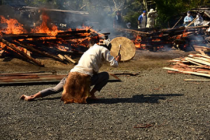

― これまでのイベント（記録） ―

|
| （画像をクリックで拡大します） |
「第23回秋の縄文野焼き祭り 縄文ロード～土器が結ぶ世界への道」が開催されました。
前夜に降った激しい雨が夜半過ぎにピタリとやみ、今日の縄文野焼きの火入れに立ち会おうとする人たちが
朝早くから集まってきました。
７時頃から火おこしして点火。
白い煙がスーッと立ち昇り、小さな赤い火がすぐに勢いよく燃え出して今日の祭りの開始を告げます。
=∴=∵=∴=∵=∴=∵=∴=∵=∴=∵=∴=∵=∴=∵=∴=∵=∴=∵=∴=∵=∴=∵=∴=∵=∴=∵=∴=
世界最古級の土器文化『縄文』は1万5千年以上前の日本列島に生まれ、造形美と豊かな精神性を花開かせました。
やがて土器文化は東アジアから世界各地へ伝播します。
昨年８月に猪風来・村上原野が渡米した際、アメリカ先住民族であり母なる大地に生きる平和の民・ホピ族との
交流が実現しています。
独自の土器野焼き文化をもつホピ族とは強く縄文ロードでつながり、ホピの心は縄文スピリットと通底する
という実感を深めました。
その時お会いしたルービン・サウフキー氏はホピ族の銀細工師であり、ホピ族のメッセンジャーでもあります。
今回、秋の縄文野焼き祭りに参加・交流してくださることになり、ホピ×縄文のスピリットがこの場に素晴ら
しいインスピレーションを与えてくれるという期待に皆ワクワクしています。

|
|
| （画像をクリックで拡大します） | |
=∴=∵=∴=∵=∴=∵=∴=∵=∴=∵=∴=∵=∴=∵=∴=∵=∴=∵=∴=∵=∴=∵=∴=∵=∴=∵=∴=
今回焼き上げるのは陶芸教室生を中心に法曽焼同好会、猪風来や村上原野の作品約150点以上。
春の「女たちの縄文野焼き」挑戦に引き続いて 女たちだけで取り組むひとつの野炉を受け持ちました。
合わせて2つの野炉の周りに作品を並べてあぶり焼きを開始。

|

|
| （画像をクリックで拡大します） | |
文様豊かな縄文土器や可愛らしい土偶鈴、縄文風ペッカリーや土面など、まんべんなく火にあぶられて徐々に
熱くなっていきます。
そして頃合いをみて野炉の真ん中に作品を入れます。

|
|
| （画像をクリックで拡大します） | |
=∴=∵=∴=∵=∴=∵=∴=∵=∴=∵=∴=∵=∴=∵=∴=∵=∴=∵=∴=∵=∴=∵=∴=∵=∴=∵=∴=
火床に安置された作品を囲んで、太い木や材木をきらさずに焚き続け、徐々にあがる火勢とともに刻々と
土器の色が変化してゆきます。
風が炎に勢いをつけ、さらに太陽の熱の加勢も得て、火のエネルギーが作品の中に蓄積します。

|

|

|

|
| （画像をクリックで拡大します） | |
=∴=∵=∴=∵=∴=∵=∴=∵=∴=∵=∴=∵=∴=∵=∴=∵=∴=∵=∴=∵=∴=∵=∴=∵=∴=∵=∴=
スタッフも炎の舞う野炉で火の粉を浴びながら必死に薪を積みます。
やがて生れ出ようとする命の誕生を待ち構えています。

|
|

|
|
| （画像をクリックで拡大します） | |
そして近づくクライマックス。
炎が赤く天に昇る時、火のパワーを宿した新しい命の誕生！
感動の一瞬です。

|
|
| （画像をクリックで拡大します） | |
=∴=∵=∴=∵=∴=∵=∴=∵=∴=∵=∴=∵=∴=∵=∴=∵=∴=∵=∴=∵=∴=∵=∴=∵=∴=∵=∴=
今回、岡山・倉敷・総社・矢掛町などの岡山県内からはもちろん、遠く新潟、東京や千葉、大阪、鳥取、広島、
香川などから250人以上参加してくれました。
これまでの活動の繋がりで縄文に惹かれて集まった方々はもちろん、今回は熱心なホピ族ファンも新たに参集。

|
|

|
|

|
|
| （画像をクリックで拡大します） | |
また縄文の学術的・文化的研究として東京大学の先生と院生など、岡山大学の先生や学生たち、広島県三次市
の県立歴史民俗資料館の方々も、縄文野焼きの学びの場として見学や実践体験をしました。

|
|
| （画像をクリックで拡大します） | |
=∴=∵=∴=∵=∴=∵=∴=∵=∴=∵=∴=∵=∴=∵=∴=∵=∴=∵=∴=∵=∴=∵=∴=∵=∴=∵=∴=
《縄文野焼き大賞》
焼き上がった作品の中から、特に縄文造形の素晴らしさや独創性に優れ、また縄文の心あふれる作品を対象
に「縄文野焼き大賞」など4賞を選考・表彰いたしました。
受賞作は12月から当館に展示いたします。
●受賞者（敬称略）
◆縄文野焼き大賞 ………………… 小野真由美（岡山市） 縄文土器
◆新見市教育委員会教育長賞 …… 森谷陽希（井倉小２年） 縄文土偶
◆法曽焼同好会会長賞 …………… 大岡千尋（岡山市） 縄文土偶
◆猪風来美術館館長賞 …………… 中山裕那（岡山市） 縄文土器
| 【縄文野焼き大賞】 | 【新見市教育委員会教育長賞】 |

|
|
| 【法曽焼同好会会長賞】 | 【猪風来美術館館長賞】 |
| （画像をクリックで拡大します） | |
=∴=∵=∴=∵=∴=∵=∴=∵=∴=∵=∴=∵=∴=∵=∴=∵=∴=∵=∴=∵=∴=∵=∴=∵=∴=∵=∴=
《縄文体験コーナー》
～縄文土器で煮炊きをしてみよう！～
土器汁は格別のおいしさです。
２個の土器の周りに薪をくべて、野菜やキノコとタカキビ団子の縄文汁を作りました。
たくさんの女性たちが手伝いしながら、土器の保温力や料理の魅力に感心しきり。
「私も煮炊き用土器が欲しい」「作りたい」の声が……。
みんなでつくろう縄文土器！ みんなで食べよう縄文鍋！

|
| （画像をクリックで拡大します） |
～粘土でつくろう～
思い思いの形を作り、それぞれの工夫で縄目を転がしたり押し付けたり。
粘土を触っているだけで楽しい気分。
参加者の作品は、11月中に野焼きして焼き上げる予定です。
～粘石で勾玉をつくろう～
白・黒・ピンクのやわらかな滑石を紙やすりなどでこすって勾玉の形にします。
大人も子供もひたすら削り続けてやっと思うような形になったかな？
勾玉ペンダントのできあがりです！

|

|
| （画像をクリックで拡大します） | |
=∴=∵=∴=∵=∴=∵=∴=∵=∴=∵=∴=∵=∴=∵=∴=∵=∴=∵=∴=∵=∴=∵=∴=∵=∴=∵=∴=
《販売コーナー》
地元法曽焼同好会女性会員の皆さんが大奮闘。
昼食にはうどん・猪カレーうどん・猪カレーライスなどが提供されました。
飲み物・お菓子や地元特産品法曽茶・法曽焼、ピオーネの販売もありました。
| （画像をクリックで拡大します） | |
=∴=∵=∴=∵=∴=∵=∴=∵=∴=∵=∴=∵=∴=∵=∴=∵=∴=∵=∴=∵=∴=∵=∴=∵=∴=∵=∴=
《米国先住民ホピ族 ルービン・サフスキー氏来る！》
～縄文野焼きの炎とイーグルダンス～
太陽に祈りをとどける儀式「イーグルダンス」は縄文野焼きカムイノミに引き続いて行われました。
鷲の羽をまとい「イーグルのパワーをもつホピの精霊の姿」になったルービン氏が現れ、太鼓とホピの歌声の
調べの中で舞い始めました。
羽飾りのついた腕を大きく羽ばたかせながら大地を力強く踏みしめる独特のリズム、両腕を前に差し出し羽を
閉じ、その羽を太陽の方向に差し上げる仕草などを繰り返しながら、祈りが太陽まで運ばれるのです。
不思議なことにそれまで雲が覆っていた空に、日の光が差し始めました。
祈りがとどいて縄文野焼きへ太陽の祝福がもたらされたのでしょうか。
ルービン氏はその後広場に輪になった人たちをまわって両腕の羽で触れ人々の思いを羽にのせて太陽に運んで
くれました。
|
（撮影の許されない祈りの儀式のため、写真はありません） |
=∴=∵=∴=∵=∴=∵=∴=∵=∴=∵=∴=∵=∴=∵=∴=∵=∴=∵=∴=∵=∴=∵=∴=∵=∴=∵=∴=
～大地に感謝の祈りを――広場にラウンド・ダンスの大きな輪がひろがる！～
縄文野焼きが無事に終了したことを大地に感謝して、ホピのラウンド・ダンスがルービン氏の指導で行われ
ました。
ホピの太鼓に合わせて、居合わせた皆で大きな大きな輪になってステップを踏みます。
大地を踏みしめる簡単なステップですが、これは私たちが大地と繋がっているという意味。
また両手を挙げてその場で回るのは、まわりのすべてのもの関わっていること、また良きほうに事が変わって
いくようにという意味だそうです。
野焼きスタッフ、裏方スタッフそして各地からの参加者もラウンドダンスを踊りながら、この空間と時間を
共有することができた喜びを感じていました。

|
|

|

|
| （画像をクリックで拡大します） | |
=∴=∵=∴=∵=∴=∵=∴=∵=∴=∵=∴=∵=∴=∵=∴=∵=∴=∵=∴=∵=∴=∵=∴=∵=∴=∵=∴=
《太鼓パフォーマンスで縄文野焼きを盛り上げる！》
瀬戸内市の赤田龍太郎太鼓集団が彼自作のシャーマニックドラムを手に野焼きの炎に絡みます。
炎の祭場の命の誕生を待ち望む祈りの太鼓と舞が繰り広げられました。
法螺貝やディジュリドゥーも共演しました。

|
|
|  |

|
| （画像をクリックで拡大します） | |
=∴=∵=∴=∵=∴=∵=∴=∵=∴=∵=∴=∵=∴=∵=∴=∵=∴=∵=∴=∵=∴=∵=∴=∵=∴=∵=∴=
《ホピ×縄文ワークショップ開催される！》
縄文野焼きの余韻がまだ体中を駆けめぐる夕方、猪風来美術館第５展示室で行われました。
展示室には中心に猪風来の沖縄シリーズの「黒潮の海」「女の祭」、両側に「縄文の太陽」「縄文の月」、
奥に「大地の女神」「月の女神」があり、部屋全体が森羅万象の宇宙空間のようです。
ルービン氏は霊的パワーに満ちたこの場をとても気に入り、ホピ式の祭壇を「海」の湾曲の中に作り聖なる
水を供えローソクの灯りをともしました。
輪になって座った参加者たちは何が話され行われるか気持ちを込めて見守ります。

|
|
| （画像をクリックで拡大します） | |
猪風来は、縄文造形の根幹は命の根源の形「勾玉」と命を守る「縄」が組み合わさり躍動してできていること
を土器を見せながら説明。
しかもこれらは女性たちに作られたものであり、女性原理の精神世界を内包しているものであること。
また昨年訪ねたホピ族のキヴァ（地下式の祈祷所）が縄文の竪穴住居ととても似た構造をもつ「大地の子宮」
の思考であることに共通性を感じたことなどを語りました。
ルービン氏は、ホピ族は今でも母系社会であり命を産み出す女性が大切にされていること。
ホピとは生き方のことで、母なる大地の上ですべての存在と調和し生命の輪の中でつながっていることが重要
だということ。
また縄文土器の２つ口の土器に似た形をしているホピの婚礼の器を持参してくれて、その用途について説明を
いただきました。
いつまでも仲良く長く繋がりあっていけますようにという願いをこめた造形で、実用ではなく夫婦が霊的な
心の種（精子や卵子）を植え大切にするという精神的な器とのことでした。
それからホピソングを歌い、最後にルービン氏は聖水を含ませた鷲の羽で参加者全員の体そっと触れ祈りました。
ホピと縄文が根源で深く通底していることが実感できる素晴らしい場が実現でき、お互い学びあうことで現代
を生き未来を切り開いていくための叡智を見い出していけるのではないかとの予感がしました。
今回の交流に尽力してくださったアナンダラバ事務局の佐々夫妻に深く感謝いたします。

|
|
| （画像をクリックで拡大します） | |
=∴=∵=∴=∵=∴=∵=∴=∵=∴=∵=∴=∵=∴=∵=∴=∵=∴=∵=∴=∵=∴=∵=∴=∵=∴=∵=∴=

|
| 【「第23回 秋の縄文野焼き祭り」チラシ】 →PDF版を開く |